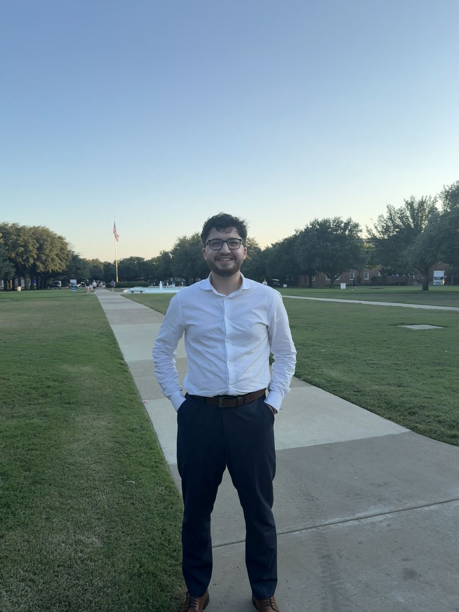

about me
building things
that matter.

erdal kaya — dallas, tx
I'm Erdal, a Computer Science student at SMU graduating in 2027. I live where math, code, and stubborn real-world problems collide. Give me something messy and I'll hand you back something clean, fast, and built to last.
But I've never believed great work happens in isolation. I lead. I organize. I get people in a room and make things happen like events across campuses, outreach drives, hackathons. The best engineers I know aren't just sharp; they show up. I try to be both.